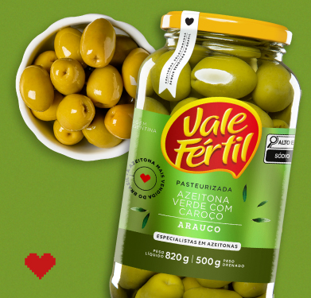

1
Planeje o que vai para o vácuo
Nem todos os alimentos são adequados para o vácuo: folhas delicadas, molhos muito cremosos ou frutas podem não resistir bem ao processo.
A VÁCUO:
mais padrão, menos desperdício
Como padronizar a operação, reduzir perdas e ganhar eficiência no delivery
No delivery, qualidade depende de consistência e, quando o padrão muda, o cliente percebe. O resultado é insatisfação, retrabalho, desperdício e prejuízo. Muitas vezes, essa variação não está na receita, mas no preparo, no armazenamento ou no transporte. É aí que a embalagem a vácuo deixa de ser um detalhe operacional e passa a atuar como ferramenta de controle: reduz variações, amplia a vida útil dos alimentos e sustenta o padrão das entregas.
A embalagem a vácuo reduz desperdícios, amplia a vida útil dos alimentos e sustenta o padrão das entregas

Adotar embalagens a vácuo exige alguns ajustes, como investimento inicial, treinamento e limites práticos, já que nem todo alimento responde bem ao processo. Ainda assim, quando comparados às perdas recorrentes de uma operação sem padrão, pode valer a pena.
Mas vale lembrar que, antes de implementar, é preciso avaliar as possibilidades do negócio e fazer um planejamento financeiro para que a mudança seja estratégica, sustentável e realmente agregue controle e eficiência à operação.
Como usar embalagem
a vácuo no delivery
Planeje o que vai para o vácuo
Nem todos os alimentos são adequados para o vácuo: folhas delicadas, molhos muito cremosos ou frutas podem não resistir bem ao processo.
Invista em equipamentos adequados
Escolha seladoras proporcionais ao volume do negócio. No mercado, há opções que funcionam para operações compactas e modelos industriais.
Treine a equipe
A técnica correta de selagem e armazenamento evita erros que comprometem o padrão.
Organize estoque e porcionamento
Pré-porcionar ingredientes facilita o preparo, reduz erros e garante consistência.
Aproveite para diversificar
Teste kits de finalização em casa, pratos congelados e cestas para expandir vendas sem perder controle.
Monitore resultados
Observe o impacto em desperdício, o tempo de preparo e a satisfação do cliente para ajustar processos e calcular o retorno sobre o investimento.